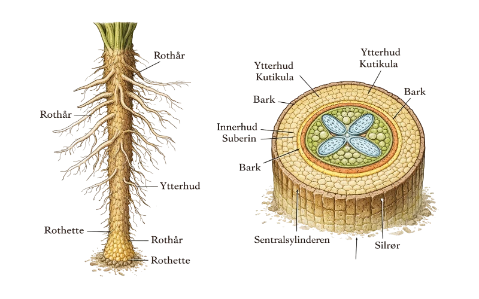
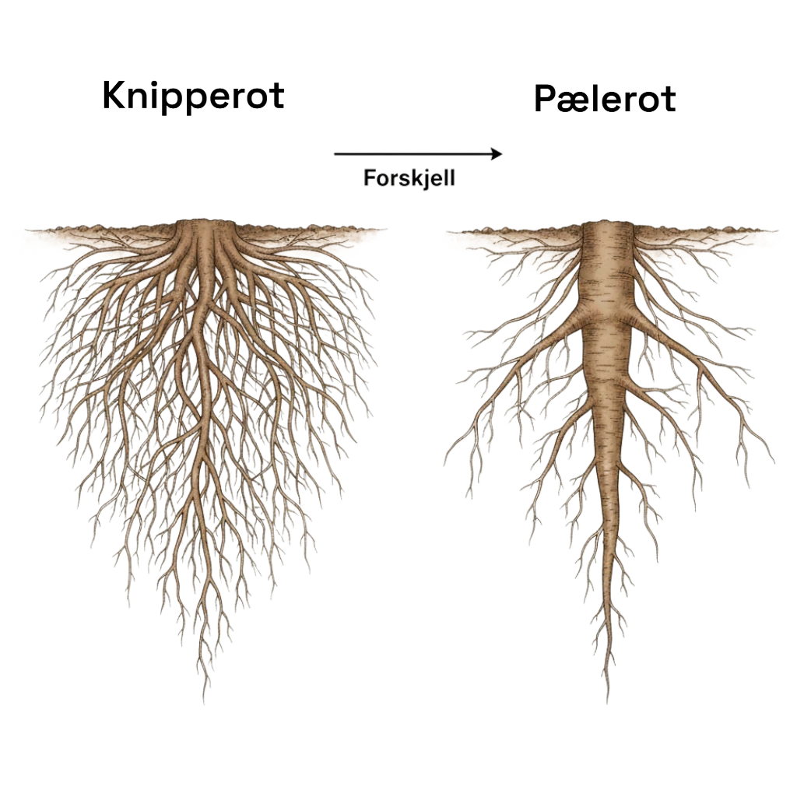
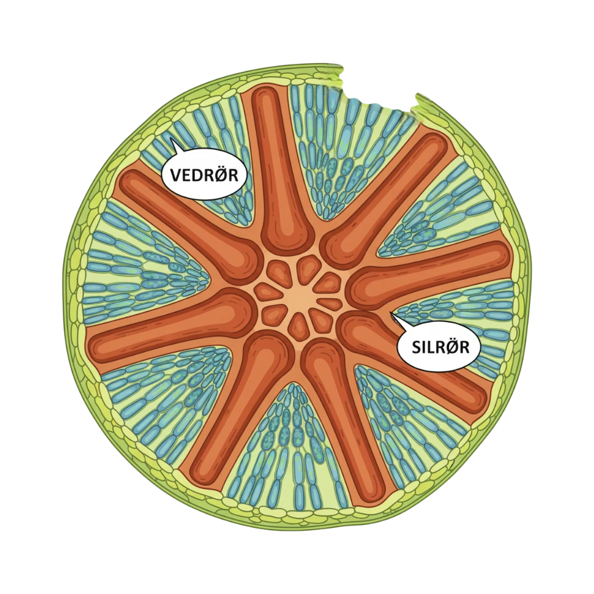

Rotsystemet
Roten bidrar til opptak av vann og næring til planten
Røttene på planten består av ytterhud, bark, innerhud, rothår og ledningsvev

URL: Ilustrasjon av rotsystemet
Ytterhuden: Det ytterste laget på rota. Fungerer som et beskyttende lag
Ledningsvev: Fungerer som plantenes transportsystem. Består av rør som frakter stoffer rundt i planten (Vedrør og Silrør).Ledningsvevet befinner seg innerst i rota i det som blir kalt Sentralsylinderen
Katikula: En beskyttende, voksaktig og vannavstøtende hinne som befinner seg på ytterhuden. Rothårene har imidlertid ikke Katikula og kan dermed - imotsetning til resten av planten - ta opp vann fra omgivelsene.
Rothår: Utstikkere som befinner seg på ytterhuden. Rothårene er i stand til å ta opp store mengder vann og mineraler
Rothette:Nederst på rota finnes en rothette som beskytter rotspissen når den presser seg ned i jorda
Bark: Bark er et tykkt lag bestående av løst pakkede celler. Laget befinner seg innenfor ytterhuden
Innerhud: Innerhuden kontrollerer hva som slipper inn i ledningsvevet. Innerhuden er plassert rundt sentralsylinderen. Det består av et vokslag som heter "Suberin". Suberin danner sammenhengende bånd kalt casparyske bånd.
URL: Ilustrasjon av rotsystemet
Rotsystemet kan variere mellom planter. Noen har en hovedrot som vokser dypt ned i jorda, kalt pælerot, mens andre har mange tynne røtter som sprer seg bredt, kalt knipperot. Uansett form er roten livsviktig for plantens vekst og overlevelse.
URL: Ilustrasjon av Knipperot/Pælerot
Sentralsylinderen
Planten tar aktivt opp mineraler og næringsstoffer via rothårene. Når disse stoffene tas opp, følger vann passivt med ved osmose. (Du kan lese mer om dette i artikkelen om vanntransport)
Vann og mineraler transporteres videre inn til sentralsylinderen, som fungerer som plantens transportsenter.
Vedrør: Frakter vann og mineraler fra røttene og opp til bladene
Silrør: Frakter sukker og næring fra bladene til resten av planten
URL: Ilustrasjon av Sentralsylinder